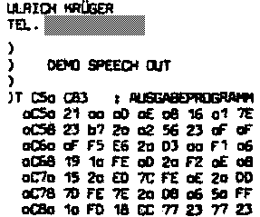
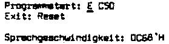
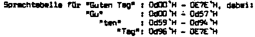
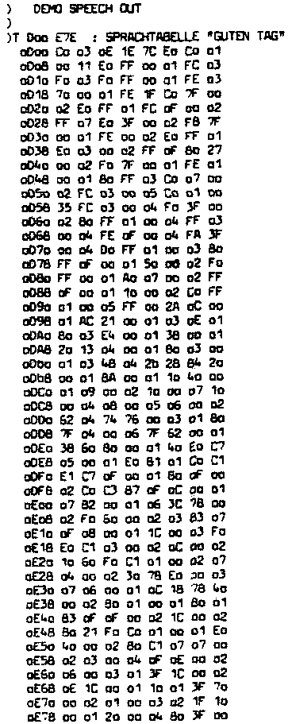

Nascom Journal |
0/80 |




ab sofort verfügbar !! In dieser Spalte werden ausschließlich Produkte beschrieben, die tatsächlich erhältlich sind !
Umschaltkarte zum Umschalten zwischen den Betriebssystemen NAS-SYS 1 und Nasbug T4. Mancher Benutzer möchte die Vorteile nutzen, die NAS-SYS 1 für den Betrieb mit BASIC bietet (z.B. frei beweglicher Cursor), aber andererseits nicht auf den gewohnten Nasbug T4 verzichten, für den vielleicht schon zahlreiche Programme vorliegen. So bietet sich als Kompromiß die Umschaltkarte an. Auf diese Karte werden beide Betriebssysteme aufgesteckt. Von der Karte führen zwei Flachsteckverbinder in die Sockel, in denen bislang der Nasbug T4 steckte.
Platine, Bausatz mit allen Teilen einschließlich Flachsteckern: 68.– + MWSt
3k Assembler für Nascom 1 und Nascom 2
Ein leistungsfähiger
Assembler für Nascom 1 und Nascom 2 ist jetzt verfügbar.
Leider
sind die von N.A.S. angekündigten Assembler für Nascom 2 und
der erweiterte ZEAP für Nascom 1 immer noch nicht verfügbar,
sodaß wir uns entschlossen haben, diesem Zustand durch eine
Eigenentwicklung abzuhelfen.
Der EPROM-Assembler ist mit ZEAP kompatibel. Das heißt, Sie können die schon vorhandenen Bänder mit symbolischen Code weiterverwenden. Zusätzlich hat der EPROM-Assembler noch einen erweiterten Editor, der z.B. mit einem verbesserten F-Befehl arbeitet. Noch einige andere Dinge sind verbessert worden. So kann es bei ZEAP passieren, daß man mit dem Assembler den Assembler selbst überschreibt und zerstört. Das kann z.B. geschehen, wenn man ein Programm assembliert, dessen Maschinencode bei 0C50 beginnt, aber weiter als bis 0F00 reicht. Einerseits kann man vom symbolischen Code her nicht ohne weiteres auf einen Blick sagen, wie weit der Maschinencode in den Speicher hinein laufen wird, andererseits „merkt“ ZEAP“ das ohnehin nicht und zerstört sich selbst.
Der EPROM-Assembler verhindert dies. Er schützt zusätzlich noch die Variablenfelder, die er im Speicher ablegt.
Der Nascom 2 – Assembler hat den großen Vorzug, daß man die vollen Editiermöglichkeiten nutzen kann, die NAS-SYS 1 bietet. Man kann mit dem Cursor überall auf dem Bildschirm herumlaufen, den Text verändern und als neue Eingabe verwenden.
Beide Assembler kommen mit deutscher Beschreibung. Bei Bestellung bitte Typ des Betriebssystemes angeben !
Jeder EPROM-Assembler 240,– + MWSt
2k Disassembler für Nascom 1 und Nascom 2
Der Disassembler dient dazu, Maschinenprogramme in Assemblerprogramm zurück zu übersetzen. Unser Disassembler kann sogar Bänder erzeugen, die man mit ZEAP oder unseren EPROM-Assemblern gleich weiterverarbeiten kann.
Den Assembler gibt es für Nascom 1 auf Band mit den Startadressen 1000K und 4000H.
Für Nascom 2 ist der Assembler auf EPROMs erhältlich.
Nascom 1 – Disassembler 79.80 + MWSt
Nascom 2 – Disassembler 120.00 + MWSt
| Seite 5 von 12 |
|---|